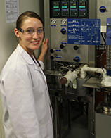

PhD students
| Carolina Gomez | August 2013 | Fundamental Studies of d-band Transition Metal Alloys | Intel Corporation |
| Haojuan Wei | December 2012 | Selective Hydrogenation of Acrolein over Supported Silver and Silver Alloy Nanoparticles (co-advisors: Jeff Miller and Chris Marshall, Argonne National Lab) | Abbott Labs |
| Jun Yin | August 2011 | Fundamental Studies of Nitrogen and Hydrocarbons on Metal Surfaces (co-advisor: Michael Trenary) | James Madison University |
| Chiunteh "David" Ho | December 2010 | Synthesis and Charaterization of Tantalum (oxy)Nitride Nanoparticles (Co-advisor: Preston Snee) | Intel Corporation |
| Theresa Feltes | August 2010 | The Selective Adsorption of a Manganese Promoter Over Supported CO Hydrogenation Catalysts (Primary Advisor: John Regalbuto) | Johnson Matthey |
| Yu Lei | May 2010 | Experimental Studies of Model Catalysts: Linking Structure and Reactivity | University of Alabama at Huntsville |
| Jelena Jelic | December 2009 | Density Functional Theory Studies of NOx Storage Reduction Catalysts | Postdoc at Technical University of Munich w/ Karsten Reuter |
Undergraduate Students
| Patrick Coan | DFT study of acrolein hydrogenation on Zn@SiO2 | ||
| Bridget Basan | DFT study of H2 dissociation over Ag single atom alloys | ||
| Alexandria Rinella | May 2012 | DFT Studies of Nitrogen/Hydrocarbon interactions on Pt(111) | Ohio State University (MS) |
| Shrikant Shah | May 2010 | Synthesis of Mn promoted Rh/SiO2 using SEA | University of Illinois at Chicago (MS) |
| Ruzica Todorovic | May 2010 | DFT studies of direct synthesis of H2O2 | University of Illinois at Chicago (PhD) |
| Chithra Asokan | May 2010 | DFT studies of propylene epoxidation over Ag surfaces | UOP |
| Catalina Mogollon | May 2009 | Synthesis of PdZn/SiO2 alloys using SEA | University of Illinois at Chicago (MS) |
| Max Chmara | May 2009 | Synthesis of PtFe alloys using SEA | |
| Pavithra Tiruppathi | May 2009 | DFT studies of C2H2 hydrogenation over Pd surfaces | University of Notre Dame (MS) |
| Joe Gomes | May 2008 | DFT studies of CO adsorption on p-d alloy catalysts | University of California at Berkeley (PhD) |
Other Students
| Student | High School | Dates | Project Title |
|---|---|---|---|
| Meghavi Talati | James Conant | Summer 2013 | DFT studies of NO Oxidation on reduced PdO(101) |
| Ujwal Kiran | Illinois Math and Science Academy | September 2012- May 2013 | DFT study of single site Ta/SiO2 hydrodenitrogenation catalysts |
| Jennifer Lin | Illinois Math and Science Academy | September 2011- May 2012 | DFT study of CO hydrogenation on Rh(111) |
| Justin Glasper | Illinois Math and Science Academy | September 2009- May 2010 | Comparison of preparation methods of Rh nanoparticles on rutile TiO2 |
| Adelina Koleva | Illinois Math and Science Academy | September 2008- May 2009 | Preparation of NiZn Alloy Catalysts using Strong Electrostatic Adsorption |
| Erin Talbot | Illinois Math and Science Academy | September 2007- May 2008 | Preparation of PtFe Alloy Catalysts using Strong Electrostatic Adsorption |